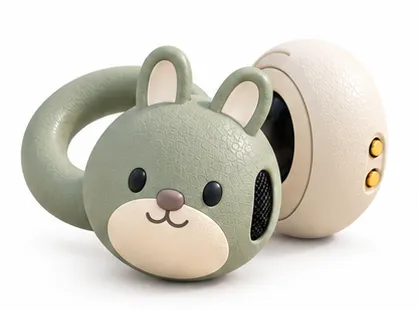

Pulse rate
— bpm
Average of observed intervalsYOUR EVERYDAY COMPANION
Meet Momo. A little companion for
listening, noticing, and taking a pause.

— bpm
Average of observed intervals— ms
A quiet minute to beginNot connected
No readings yetPulse intervals · milliseconds
Your chart will grow as your sensor sends data.
Your words give the numbers context.
A signal is a clue, not a judgement. PPG interval variability is an estimate—not a measure of your mood, focus, or worth.
No active session
These are pulse intervals received from your MOND, not an ECG waveform. RMSSD describes differences between adjacent retained observations. The current firmware repeats cached values and can omit intervals, so these are observed-event estimates.
A full quiet minute is needed before variability appears. Missing values stay as gaps. “Recent data” describes freshness, not verified skin contact. The app cannot read your feelings from these numbers.
Data is processed on your device. This first version records only while the app is in the foreground. Battery level is not supplied by this firmware.
Small observations. A little more understanding.
Save what you noticed, without needing to explain everything.
Momo is here to keep you company. Connect your MOND, choose when to check in, and explore your own patterns.
Turn on the sensor and keep it nearby. Choose your HeartRateMonitor device when the Bluetooth picker opens.